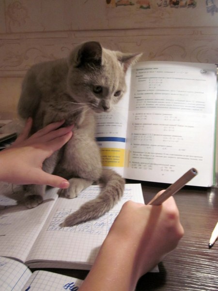

Добыча информацииПушистые мастерски отвлекают нас от важных дел. |
Похишение комфорта хозяинаИногда наши четвероногие "друзья" создают настоящий хаос вокруг себя. Не думайте, что они это делают не специально! |
Обманчивый вечный сонКоты очень много спят. Но нам это только кажется! |
Чувство голодаКоты просят все время еду не просто так. Это их хитрющий план. Они следят за нами как мы заказываем им корм в интернете и внимательно следят как проходит оплата. В будущем они надеятся запомнить все номера банковских карт и сами покупать все что им захочется. |